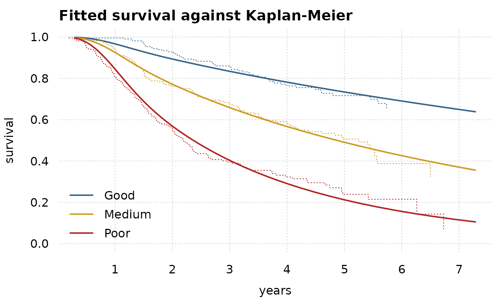

How to fit a flexible parametric survival model
Source:vignettes/royston-parmar.Rmd
royston-parmar.RmdA Cox model leaves the baseline hazard unspecified, which is what makes it robust and also what stops it from telling you the hazard. A Royston-Parmar model writes the log cumulative hazard as a natural cubic spline in log time. You get proportional hazards when you want them, a smooth estimated baseline you can plot, and time-varying effects when the proportional-hazards assumption fails.
royston_parmar() is that family, parameterized exactly
as flexsurv::flexsurvspline() parameterizes it.
The data
flexsurv’s bc data: 686 breast cancer
patients in three prognostic groups, recurrence-free survival in years,
299 events and 387 right-censored rows.
data(bc, package = "flexsurv")
table(bc$group, event = bc$censrec)
#> event
#> 0 1
#> Good 178 51
#> Medium 126 103
#> Poor 83 145One thing to get right before anything else. frmtmb’s
cens() reads 0 as an observed event and
1 as right censored. A Surv() status column is
the other way round. Convert it, once, and name the column for what it
holds:
bc$censored <- 1 - bc$censrecFit it
df is the degrees of freedom of the spline: the number
of interior knots plus one. df = 3 gives two interior knots
and four coefficients, which is Royston and Parmar’s usual starting
point. The knots go at equally spaced quantiles of the log UNCENSORED
times, which needs the response, so they are chosen when
frm() assembles the model frame.
fit <- frm(bf(recyrs | cens(censored) ~ group),
family = royston_parmar(df = 3), data = bc)
fixef(fit)
#> $mu
#> (Intercept) groupMedium groupPoor
#> -2.7467993 0.8342391 1.6117459
#>
#> $gamma1
#> (Intercept)
#> 3.468767
#>
#> $gamma2
#> (Intercept)
#> 0.5679955
#>
#> $gamma3
#> (Intercept)
#> -0.3577181mu is gamma0, the spline intercept, and the
group coefficients sit on it. Because gamma0
shifts the whole log cumulative hazard, those are LOG HAZARD RATIOS: the
model is proportional hazards.
gamma1 and upward are the other spline coefficients, and
together with gamma0 they are the baseline.
It is the same model flexsurv fits
Not “close to”. The same. Both packages evaluate one function, and the proof is to hand flexsurv’s fitted coefficients to frmtmb’s objective:
fs <- flexsurv::flexsurvspline(survival::Surv(recyrs, censrec) ~ group,
data = bc, k = 2, scale = "hazard")
kn <- fs$knots
o <- frm(bf(recyrs | cens(censored) ~ group),
family = royston_parmar(knots = kn[2:(length(kn) - 1)],
bknots = kn[c(1, length(kn))]),
data = bc, dry_run = "objective")
cf <- fs$res[, "est"]
gam <- cf[grep("^gamma", names(cf))]
par <- c(gam[1], cf[!grepl("^gamma", names(cf))], gam[-1])
c(flexsurv = fs$loglik, frmtmb_at_flexsurv_par = -o$obj$fn(par))
#> flexsurv frmtmb_at_flexsurv_par
#> -791.4957 -791.4957Those two numbers agree to about ten units in the last place of a
number near 800. Note flexsurv’s k is this
package’s df - 1: k counts the interior knots
and df counts them plus one.
The two optima then agree as well:
c(flexsurv = fs$loglik, frmtmb = as.numeric(logLik(fit)))
#> flexsurv frmtmb
#> -791.4957 -791.4957Read the baseline off
Every spline coefficient is a distributional parameter, so
predict(type = "link", dpar = ) reaches each of them and
the fitted baseline is the basis times those coefficients. There is no
penalized smooth in this model, so frm_curve() has no
random-effect block to read and refuses; add an s() term
and it applies here as it does anywhere else.
tg <- exp(seq(log(0.3), log(max(bc$recyrs)), length.out = 60))
nd <- data.frame(recyrs = tg,
group = factor("Good", levels = levels(bc$group)))
lp <- lapply(c("mu", "gamma1", "gamma2", "gamma3"), function(dp) {
predict(fit, newdata = nd, type = "link", dpar = dp)
})
kn <- environment(family(fit)[["lpdf"]])$allknots
x <- log(tg)
# the Royston-Parmar basis, written out: a constant, x itself, and one
# natural cubic term per interior knot, each linear beyond the boundary
rp_basis <- function(knots, x) {
nk <- length(knots)
out <- list(rep(1, length(x)), x)
for (j in seq_len(nk - 2)) {
kj <- knots[j + 1]
lam <- (knots[nk] - kj) / (knots[nk] - knots[1])
out[[j + 2]] <- pmax(x - kj, 0)^3 - lam * pmax(x - knots[1], 0)^3 -
(1 - lam) * pmax(x - knots[nk], 0)^3
}
out
}
bas <- rp_basis(kn, x)
logH <- Reduce(`+`, Map(function(b, g) b * as.numeric(g), bas, lp))
S <- exp(-exp(logH))
head(data.frame(t = round(tg, 3), logH = round(logH, 3),
survival = round(S, 3)), 4)
#> t logH survival
#> 1 0.300 -6.934 0.999
#> 2 0.317 -6.752 0.999
#> 3 0.334 -6.570 0.999
#> 4 0.353 -6.390 0.998
cols <- c("steelblue4", "goldenrod3", "firebrick")
surv_of <- function(g) {
ndg <- data.frame(recyrs = tg,
group = factor(g, levels = levels(bc$group)))
lps <- lapply(c("mu", "gamma1", "gamma2", "gamma3"), function(dp) {
as.numeric(predict(fit, newdata = ndg, type = "link", dpar = dp))
})
exp(-exp(Reduce(`+`, Map(`*`, bas, lps))))
}
tinyplot::tinyplot(x = tg, y = surv_of("Good"), type = "l", lwd = 2,
col = cols[1], theme = "clean2", ylim = c(0, 1),
xlab = "years", ylab = "survival",
main = "Fitted survival against Kaplan-Meier")
for (i in 2:3) {
tinyplot::tinyplot_add(x = tg, y = surv_of(levels(bc$group)[i]),
type = "l", lwd = 2, col = cols[i])
}
km <- survival::survfit(survival::Surv(recyrs, censrec) ~ group, data = bc)
km_s <- summary(km)
for (i in seq_along(levels(bc$group))) {
k <- km_s$strata == levels(km_s$strata)[i]
lines(km_s$time[k], km_s$surv[k], type = "s", col = cols[i], lty = 3)
}
legend("bottomleft", levels(bc$group), col = cols, lwd = 2, bty = "n")
The fitted curves track the Kaplan-Meier estimates, which the model was never shown.
When hazards are not proportional
A formula on gamma0 shifts the whole curve, which is
proportional hazards. A formula on any OTHER coefficient multiplies a
function of log time, so it is a TIME-VARYING effect:
flexsurv spells this anc =, and here it is an
ordinary second formula.
ftv <- frm(bf(recyrs | cens(censored) ~ group, gamma1 ~ group),
family = royston_parmar(df = 3), data = bc)
c(proportional = as.numeric(logLik(fit)),
time_varying = as.numeric(logLik(ftv)),
AIC_proportional = AIC(fit), AIC_time_varying = AIC(ftv))
#> proportional time_varying AIC_proportional AIC_time_varying
#> -791.4957 -785.8381 1594.9913 1587.6762gamma1 multiplies log(t), so letting it
vary by group lets each group’s hazard ratio drift with time rather than
holding still.
What this family will not do
fitted() and predict(type = "response")
refuse, and say why. The mean of a survival time under this model is an
integral of the fitted survival function with no closed form, and the
censored rows do not identify its upper tail. mu is a
spline coefficient, not a fitted value, and the identity link would let
it pass for one:
fitted(fit)
#> Error:
#> ! royston_parmar: a survival time has no mean on the response scale here. mu is gamma0, the intercept of a spline in log time, not a fitted value, and the mean survival time is an integral over a tail the censored rows do not identify. predict(type = "link", dpar = ) gives any spline coefficient, and frm_curve() reads the fitted log cumulative hazard off with a bandThe check you must run
One thing in this family is a floor rather than an answer, and it is
silent in the fitted object. rp_floored() is where it goes
to be read. It refuses on that one and reports on a second quantity that
used to be a floor and is not one any more:
rp_floored(fit, action = "report")
#> $n_censored_deep
#> [1] 0
#>
#> $max_nlogS
#> [1] 2.088002
#>
#> $threshold
#> [1] 19.2
#>
#> $n_nonmonotone
#> [1] 0
#>
#> $scale
#> [1] "hazard"
#>
#> $n_obs
#> [1] 686
#>
#> attr(,"rows")
#> attr(,"rows")$censored
#> integer(0)
#>
#> attr(,"rows")$nonmonotone
#> integer(0)Zero on both counts here. Run it on every fit whose data carry
censoring, because neither logLik() nor AIC()
can tell you.
What the censored count used to mean. Up to frmtmb
0.51.0 core formed a right-censored contribution as
log(1 - F(y)) on the probability scale and offered a family
no complementary log-CDF slot to hand back log S directly.
The scored log S carried absolute error about
eps / S: exact at -log S of 10, wrong by
1.7e-04 at 30, and floored at -35.127363 past 36. Past 30 its GRADIENT
was exactly zero, so the optimizer priced such a row at a constant and
fitted the others as if it were free.
frmtmb 0.52.0 added the lccdf slot and this family
supplies it, in closed form on all three scales, so no complement is
formed and the floor is gone. n_censored_deep still counts
the rows that used to fall in it, because a censored row whose fitted
survival probability is exp(-40) is one the data barely
constrain whatever the arithmetic does. It is a diagnostic now, and it
does not refuse.
Here is the design that made the old floor bite. One subject of 600
is censored far beyond every event time, flexsurv declines
to fit it at all, and on 0.51.0 it converged without a warning and
reported a log likelihood thousands of units away from the model’s:
set.seed(20260905)
n <- 600
bad <- data.frame(grp = factor(rep(c("A", "B"), each = n / 2)))
bad$t <- rweibull(n, shape = 1.6,
scale = ifelse(bad$grp == "A", 0.30, 3.0))
bad$censored <- 0L
bad$t[1] <- 50
bad$censored[1] <- 1L
bad_fit <- frm(bf(t | cens(censored) ~ grp),
family = royston_parmar(df = 3), data = bad)
#> Warning: Optimizer did not report convergence: false convergence (8)
c(converged = bad_fit$opt$convergence, logLik = as.numeric(logLik(bad_fit)))
#> converged logLik
#> 1.0000 -575.5379
str(rp_floored(bad_fit, action = "report"))
#> List of 6
#> $ n_censored_deep: int 1
#> $ max_nlogS : num 55.7
#> $ threshold : num 19.2
#> $ n_nonmonotone : int 0
#> $ scale : chr "hazard"
#> $ n_obs : int 600
#> - attr(*, "rows")=List of 2
#> ..$ censored : int 1
#> ..$ nonmonotone: int(0)That fit is now SCORED CORRECTLY and rp_floored() does
not refuse it. The one deep row is counted, at -log S of
55.73, and its contribution is -55.7302136 exactly where
the old form gave -Inf and the floor gave -35.127363. The
reported log likelihood reproduces an independent one written from the
hazard-scale definition to 4.2e-12.
What has NOT changed is that logLik() and
AIC() cannot be gated from an extension.
logLik() reads object$opt$objective, one
number, and the protocol has no per-row or per-group log-likelihood slot
through which a family could say which rows carried it.
post$fit_check, frmtmb’s fit-end hook, is what this family
uses instead: it warns as the fit is returned. That covers the
monotonicity floor, which is a property of the fitted parameters. It
cannot cover a row-level accounting that the protocol does not
expose.
Monotonicity of the cumulative hazard is the floor that remains, and
it is not enforced; flexsurv does not enforce it either,
and a spline that turns over inside the data range is an
over-parameterized fit rather than something the software should have
prevented. Where it turns over there is no hazard and the true log
density is -Inf, so this family floors it to keep the
optimizer alive, which makes logLik() a pseudo-likelihood.
rp_floored() counts those rows and refuses on them, and
post$fit_check warns about them as the fit is returned. You
can see the same thing directly in the slope of the fitted log
cumulative hazard, which must stay positive:
How many knots
More knots buy a more flexible baseline and cost degrees of freedom. Compare on AIC, as Royston and Parmar do:
sapply(1:5, function(k) {
AIC(frm(bf(recyrs | cens(censored) ~ group),
family = royston_parmar(df = k), data = bc))
})
#> [1] 1631.884 1595.728 1594.991 1594.012 1596.053